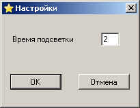

В программе пока можно настроить только время подсветки неправильно заполненных полей

Для того, чтобы открыть это окно надо выбрать "Время задержки" в меню "Действия". Подсветка производится красным цветом. Подсвечиваются клетки в двух случаях.
1. При вводе цифры, уже содержащейся в строке, столбце или выделенном квадрате.
2. При проверке расстановки, после заполнения всех клеток.
Время, в течение которого клетка выделена красным цветом и задаётся в этом окне. Допустимые значения: от 1 до 10 сек.